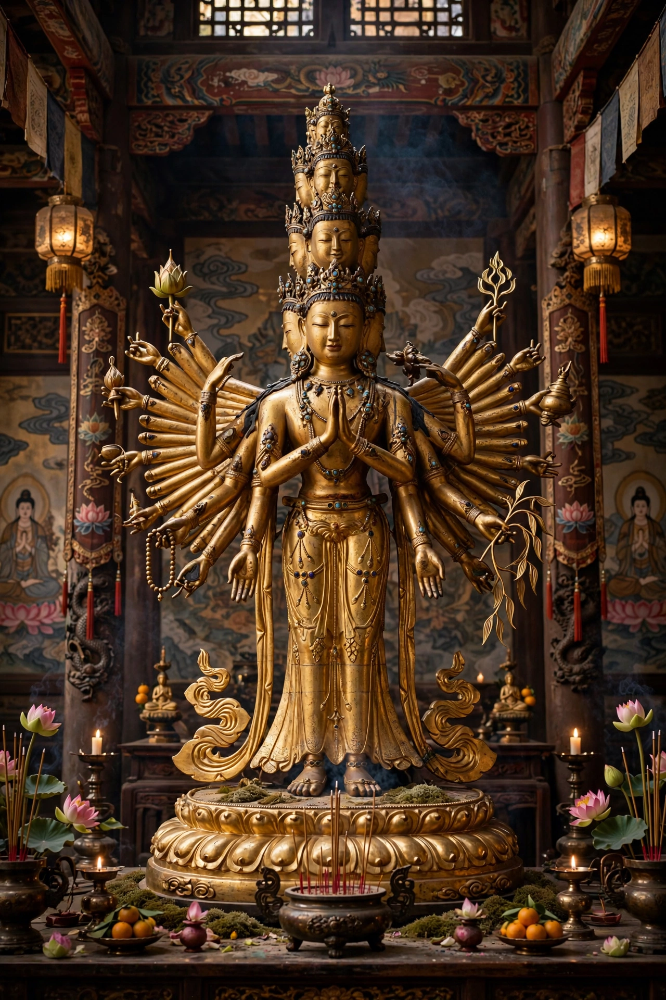

Avalokiteśvara (Sanskrit: अवलोकितेश्वर, 'the lord who looks down [with compassion]') is a bodhisattva in Mahayana Buddhism who embodies the compassion of all Buddhas. He is one of the most widely revered bodhisattvas, known as Guanyin in China, Kannon in Japan, Gwan-eum in Korea, and Chenrezig in Tibet.

| Avalokiteśvara | |
|---|---|
| Sanskrit | Avalokiteśvara |
| Chinese | Guānyīn 觀音 |
| Japanese | Kannon |
| Tibetan | Chenrezig |
| Attribute | Compassion (karuṇā) |
The Lotus Sutra's 25th chapter describes Avalokiteśvara rescuing beings who call his name. The Heart Sutra is framed as his teaching to Sariputra. He is depicted in many forms: thousand-armed and eleven-headed, White Tara-associated forms, and in East Asia increasingly feminine as Guanyin, often holding a vase of pure water and a willow branch. His mantra is Oṃ Maṇi Padme Hūṃ, especially associated with his Tibetan form Chenrezig, of whom the Dalai Lamas are considered emanations.
Guanyin · Bodhisattva · Heart Sutra · Avalokitesvara (spelling variant)
Recreated from memory.